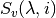
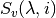

BASISReduction dialog.
Table of Contents
| Name | Direction | Type | Default | Description |
|---|---|---|---|---|
| RunNumbers | Input | string | Sample run numbers | |
| DoIndividual | Input | boolean | False | Do each run individually |
| NoMonitorNorm | Input | boolean | False | Stop monitor normalization |
| GroupDetectors | Input | string | None | Switch for grouping detectors. Allowed values: [‘None’, ‘Low-Resolution’, ‘By-Tube’] |
| NormalizeToFirst | Input | boolean | False | Normalize spectra to intensity of spectrum with lowest Q? |
| ReflectionType | Input | string | silicon111 | Analyzer. Documentation lists typical associated property values. Allowed values: [‘silicon111’, ‘silicon311’] |
| EnergyBins | Input | dbl list | -150,0.4,500 | Energy transfer binning scheme (in ueV) |
| MomentumTransferBins | Input | dbl list | 0.3,0.2,1.9 | Momentum transfer binning scheme |
| MaskFile | Input | string | See documentation for latest mask files. Allowed extensions: [‘.xml’] | |
| DivideByVanadium | Input | boolean | False | Do we normalize by the vanadium intensity? |
| NormalizationType | Input | string | by Q slice | Select a Vanadium normalization. Allowed values: [‘by Q slice’, ‘by detector ID’] |
| NormRunNumbers | Input | string | Normalization run numbers | |
| NormWavelengthRange | Input | dbl list | 6.24,6.3 | Wavelength range for normalization |
| OutputSusceptibility | Input | boolean | False | Output dynamic susceptibility (Xqw) |
For each property, the algorithm will remember the last value used. If user deletes this value and leaves blank the property field, the default value will be used. Default values are typical of the silicon111 reflection.
Run numbers: The syntax for the run numbers designation allows runs to be segregated into sets. The semicolon symbol ”;” is used to separate the runs into sets. Runs within each set are jointly reduced.
Examples:
If DoIndividual is checked, then each run number is reduced separately from the rest. The semicolon symbol is ignored.
Momentum transfer binning scheme: Three values are required, the center of the bin with the minimum momentum, the bin width, and the center of the bin with the maximum momentum.
Rescaling to first spectrum: Since the Y-scale has arbitrary units, a rescaling convention is taken whereby the maximum of the first spectrum (lowest Q-value) is rescaled to 1.0. This rescaling may not be employed when the intent is to compare to other runs, like can substraction of comparison between deuterated and hydrogenated samples.
Currently two types of reflection are possible, associated with the two analyzers of BASIS. There are typical values for the properties of each reflection:
| Reflection |
|
|
|---|---|---|
| silicon111 | -150, 0.4, 500 | 0.3, 0.2, 1.9 |
| silicon311 | -740, 1.6, 740 | 0.5, 0.2, 3.7 |
Also the following default mask files are associated to each reflection:
| Reflection | Mask file |
|---|---|
| silicon111 | BASIS_Mask_default_111.xml |
| silicon311 | BASIS_Mask_default_311.xml |
These mask files can be found in the SNS filesystem (/SNS/BSS/shared/autoreduce/new_masks_08_12_2015/)
The syntax for the vanadium run numbers designation (NormRunNumbers) is the same as in the case of the sample (hyphens and commas are understood) but no semicolons are allowed. As a result, only one set of vanadium run numbers is generated, and all runs are jointly reduced into a single vanadium workspace. Thus, if we had entered three sets of sample run numbers, then three reduced workspaces will be produced and all will be divided by the same vanadium workspace.
Normalization type by Q slice is the default
normalization. In this case, the sample is reduced into and
the vanadium is reduced into  . Later, is integrated
along the energy axis in the range [-0.034, 0.034]meV to produce
. Later, is integrated
along the energy axis in the range [-0.034, 0.034]meV to produce  .
Finally the sample is divided by the vanadium,
.
Finally the sample is divided by the vanadium,  .
.
Normalization type by detector ID carries out the division on each
detector of the instrument. If we have for detector  sample
sample  and vanadium , we integrate along the
and vanadium , we integrate along the  axis in the
range given by NormWavelengthRange to obtain
axis in the
range given by NormWavelengthRange to obtain
 and then divide
and then divide  . From this
point on, the reduction process continues using
. From this
point on, the reduction process continues using  in place of
in place of  .
.
If <i>OutputSusceptibility</i> is checked, one additional workspace and one Nexus file will be generated, both containing the dynamic susceptibility as a function of frequency, in units of GHz. The extension denoting this quantity in the workspace and file names is “Xqw” (the extension for the structure factor is “sqw”).
Perform a reduction:
BASISReduction(RunNumbers="59671",
EnergyBins=[-120,0.4,120],
MomentumTransferBins=[0.3, 0.2, 1.9],
DivideByVanadium=1,
NormRunNumbers="58183")
Categories: Algorithms | Inelastic\Reduction
Python: BASISReduction.py